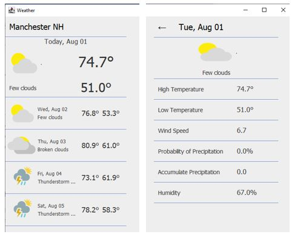
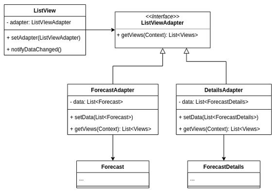

Lab5: Weather Forecast Part 1

- The left view (main view) shows the 5-day forecast.
- The righ view shows the detailed forecase on the day clicked
on the main view.
Objectives
- Learn how to use and implement Adapter Design Pattern.
- Review the Open-Closed Principle.
- Learn how to use an internet weather forecast service.
Work
- Add java-json.jar in Lab5_Files to Classpath of
JRE System Library for ort.json.*.
- Review Weatherbit's 16-Day Weather Forecast, which describes the weather forecast data used in this application.
- Open WeatherAPI.java and check:
- How is the endpoint URL built?
- When is the network request is executed?
- What data structure does your request return?
- How is this data structure converted to the Forecast object?
- In order to receive the weather forecast data from Weatherbit,
you need the API key. You can generate your own key by creating
an account at Weatherbit.io
for free.
- Put your key in the API key string.
- Review Forecast.java and ForecastDetail.java to find
how the weather forecast items are handled.
- ListViewAdapter is defined as an interface, which is implemented
by ForecastAdapter and DetailsAdapter classes.
Check how the adapter is implemented by the two classes.

- Check how the ForecastAdapter and DetailsAdapter classes
implement the getViews() method.
- Implement the updateData() method in the ListView class,
which calls the update() method of each view in the list
of views returned by the current adapter.
- Note that the View class is defined in View.java.
=== End of Lab5 ===